History
1987
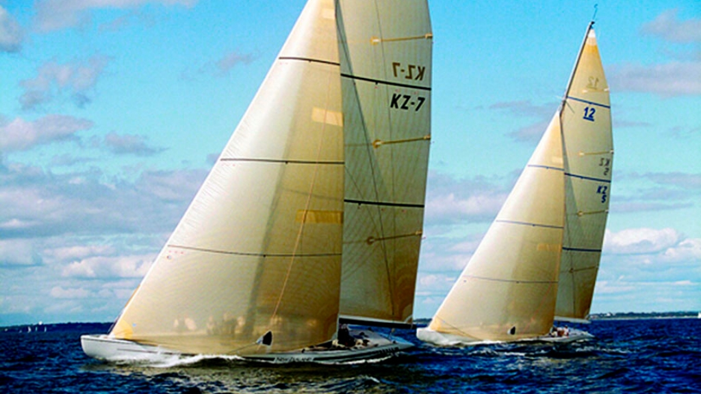
Upstarts in plastic boats
Until the Australians took the Cup to Perth in 1983, anyone brave enough to suggest that little New Zealand could match the United States in a sporting event dominated by technology and cash would have been a laughing stock.
With backing from merchant bankers Michael Fay and David Richwhite, the New Zealand Challenge made its debut in the 1987 America's Cup sailed in Fremantle, Western Australia.The team built fibreglass 12-metre yachts, rather than using aluminium. This upstart challenge rattled the opposition and America's Cup veteran Dennis Conner, who had lost to Australia at Newport in 1983, accused Team New Zealand of cheating.
Against the odds the 'Plastic Fantastic' KZ7 romped through the challenger rounds, winning 37 of 38 matches. The Kiwi charge was stopped (by Dennis Conner sailing for the San Diego Yacht Club) in the finals of the Louis Vuitton Cup. The next chapter in the America's Cup was one of those that adds to the intrigue that surrounds the Auld Mug. And this time New Zealand was centre stage.
1988
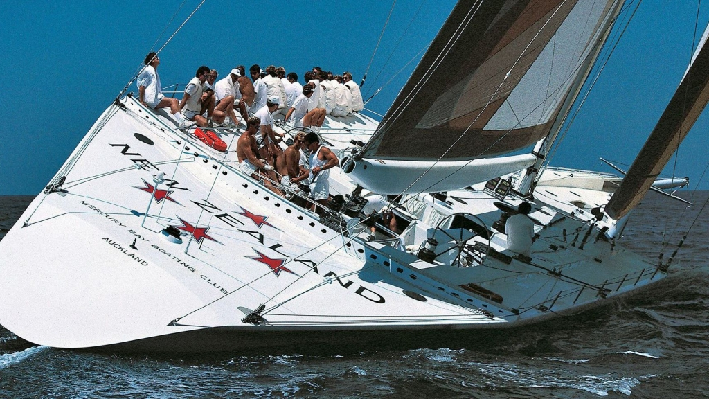
The big boat challenge
Not content to wait the usual three or four year Cup cycle, Sir Michael Fay, exploiting a loophole in the century-old Deed of Gift, demanded an immediate challenge in 1988. New Zealand issued a challenge to the San Diego Yacht Club, abandoning the established 12-metre class and returning to the 90ft waterline measurement stipulated in the Deed of Gift.
The challenging yacht was KZ1, a massive carbon-fibre monohull with wings extending from the deck like an aircraft carrier. Even in light winds, the 30-man crew had to sit on the wings to keep the boat upright.
For the first time in the Cup's history, there were two different styles of boats racing each other: the Kiwis in a giant 90-foot waterline boat against Conner's Stars & Stripes, a much smaller but faster hard-winged catamaran. Predictably, the cat won on the water and a protracted court battle followed. Ultimately New Zealand lost but once again the team had reshaped the event.
The 12-metres would never again sail Cup races and the America's Cup Class yachts were born.
1992
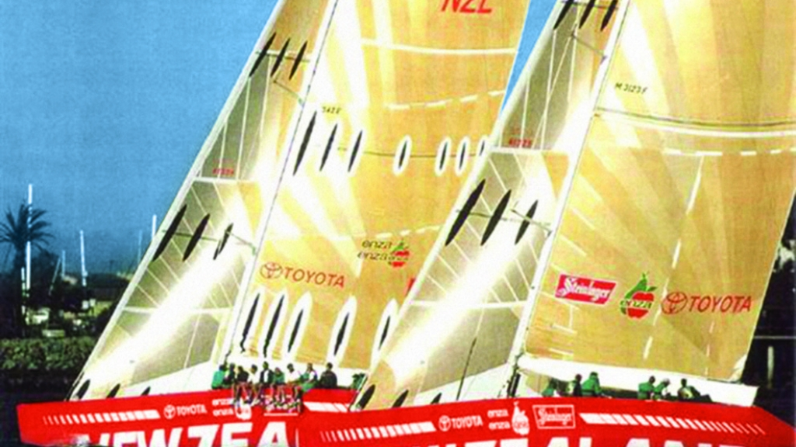
A skiff on steroids
By 1992 New Zealand was recognised as a force to be reckoned with in America's Cup racing. This edition marked the birth of the new America's Cup Class yachts. The new rule was restrictive but allowed the designers enough leeway in decisions to make an impact on performance.
New Zealand built a short, wide and light Bruce Farr design, sporting an unusual double strut keel and no rudder. The distinctive NZL20 was dubbed a 'skiff on steroids'. Skippered by Rod Davis, New Zealand rocketed through to the Louis Vuitton Challenger finals. But controversy erupted again when their Italian rivals, 'Il Moro di Venezia', mounted a campaign against NZL20's bowsprit.
Then leading the series 4-1, New Zealand (the team and the nation) watched in disbelief as the Italians came from behind to win by 5-4 and won the right to challenge for the America's Cup.
Fay and Richwhite decided not to back further Cup challenges so Peter Blake, feeling that tiny New Zealand could indeed beat the mighty Americans, took up the banner.
1995
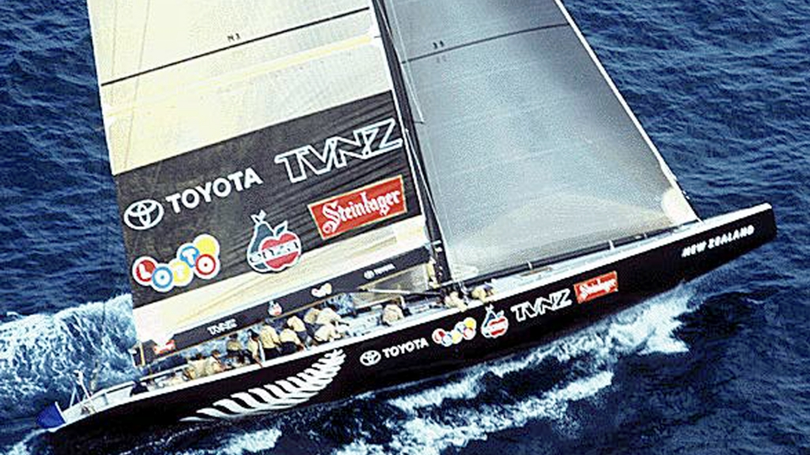
How to play the America's cup
Peter Blake changed the team's name to the simple 'Team New Zealand'. The silver fern became an element of the logo, and then a masterstroke that everyone from the home of the All Blacks could relate to-the boats were black. The team concentrated on producing superbly designed and meticulously detailed yachts.
Skipper Russell Coutts built a superb sailing team and the ever-present Peter Blake kept the campaign on course and concentrated on securing the sponsorship to make it all possible. Team New Zealand's 1995 campaign has been widely described as a textbook study of how to go about winning sport's oldest and most elusive trophy.
New Zealanders sat glued to their television sets as Team New Zealand swept all before them in San Diego. With Sir Peter Blake and his now infamous 'lucky red socks' onboard, Black Magic NZL32 rocketed to ultimate glory.
Team New Zealand won the Louis Vuitton series convincingly and continued on to America's Cup victory with a 5-0 drubbing of Team Dennis Conner's Stars & Stripes. As the Kiwis crossed the finish line in San Diego, television commentator Peter Montgomery delivered the memorable line "America's Cup is now New Zealand's Cup!"
2000
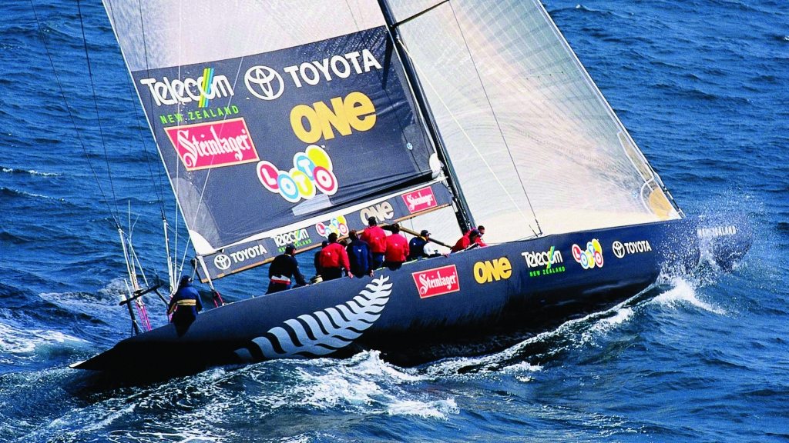
The magnificent defence
Back in Auckland, Peter Blake and his team set about creating a venue like no other to stage the 2000 America's Cup. Blake got financial backing from the Government and the Auckland City Council to redevelop the Viaduct Basin and his vision transformed a run-down base for a few fishing boats into a Cup Village.
In the eight years the America's Cup was in residence at the Royal New Zealand Yacht Squadron, a thriving boat building and services industry grew in New Zealand worth more than a billion dollars. A small country at the edge of the south-west Pacific Ocean became the holiday destination for millions.
Meanwhile, the team began preparing its defence with Tom Schnackenberg heading design and Russell Coutts leading the sailing team. Eleven syndicates from seven countries turned up in Auckland.
After a bruising Louis Vuitton Challenger Series, the Italian team Luna Rossa won the right to challenge for the Cup. In a repeat of the 1995 result, Team New Zealand's black machine NZL60 eliminated the Italian challenge by 5-0. Peter Blake, Russell Coutts, and a young Dean Barker were national heroes.
2003
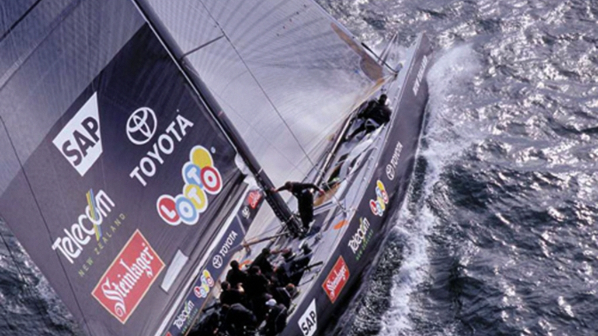
Disastrous defeat then the rebuild
Following the successful defence in 2000, Sir Peter Blake and his management team stepped aside. Within months Team New Zealand was beginning to fall apart. Russell Coutts and Brad Butterworth left, taking key members of Team New Zealand with them, to join a new team that had to be built from the ground up for Swiss biotech entrepreneur Ernesto Bertarelli.
Eventually, Tom Schnackenberg and the new directors were able to secure seed money to allow the team to begin rebuilding but by then more than 30 crew members had been bought, mainly by Alinghi and One World.
The black boats were back on the Hauraki Gulf by the summer of 2000/01, beginning the extensive training and testing critical to Cup success. However, as the Kiwi journalist Ivor Wilkins said, “there was a pack of 9 hungry challengers, many of them supported by the richest men in the world and armed with transplanted Kiwi talents and ingenuity.”
It was not to be. Team New Zealand lost the Cup to its former teammates at Alinghi, paving the way for the new era of Grant Dalton.
2007
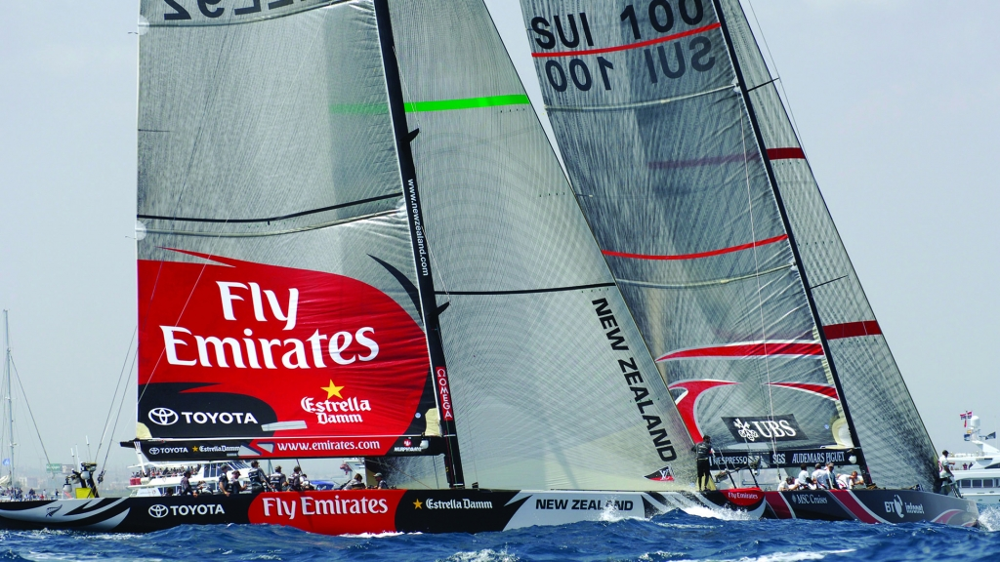
One second delta ends a thriller
The team set about rebuilding and revitalising the challenge from the ground up for the 2007 America's Cup. As a landlocked country with no access to the sea, the Swiss had to look for a coastal town and eventually, the 32nd edition took place in Valencia, Spain. A series of pre-regattas to drum up interest in the event were held at various venues in the two years prior and were raced sailing the previous generation of IACC (International America's Cup Class) monohulls.
Renamed Emirates Team New Zealand, the new-look team emerged victorious in the pre-regattas and won the Louis Vuitton Cup gaining the right to face off against Alinghi for the America's Cup Match.
New Zealanders, eager to support their team, flooded into Valencia. With New Zealand flags draped across their shoulders, they lined the canal as the yachts made their way from the harbour to the race course.
The racing that followed has been described as the most thrilling ever; no one will forget Alinghi's winning margin of just one second in the last race.
2013
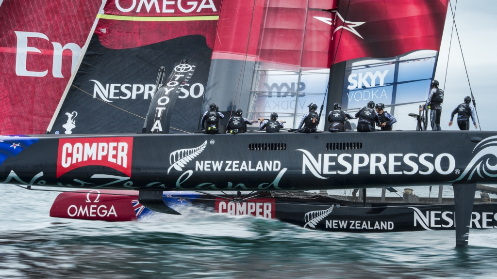
Into the total unknown
The 34th America's Cup marked a turning point in the history of the event. 72ft catamarans with massive wing sails squared off. Emirates Team New Zealand had to become masters of multihulls. The Kiwis, always pushing the boundaries of innovation, were the first team to bring foiling to the America's Cup enabling the AC72 to get up and out of the water on foils and soon all the teams were flying above the water at speeds over 40 knots.
Some spectacular sailing was seen on San Francisco Bay, with Emirates Team New Zealand leading the charge through the challenger elimination series. Eventually, Emirates Team New Zealand and Oracle Team USA met at the start line. Another chapter in the 162-year history was about to be written.
The Kiwis started the America's Cup Match superior, but Oracle was catching up fast in a boat designed to perform better in the reduced upper wind limit of 23 knots, mandated after the tragic Artemis capsize in training. Oracle won the best of 17 regatta 9-8. An event never to be forgotten.
2017
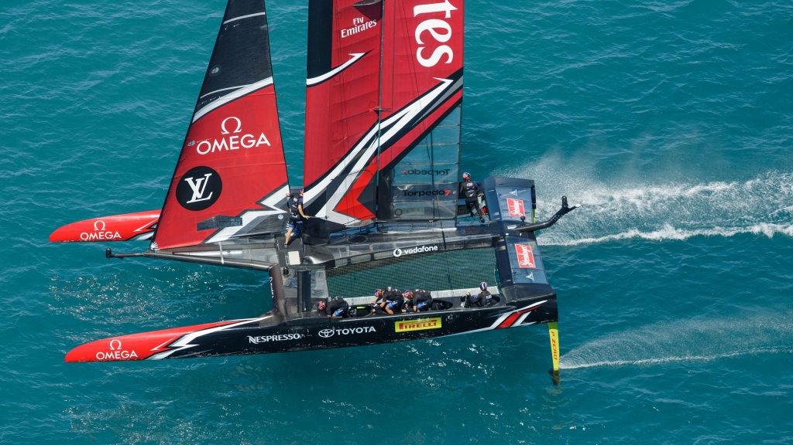
The redemption
After the brutal defeat in San Francisco, Emirates Team New Zealand quietly rebuilt a refreshed young and hungry team skippered by Glenn Ashby and helmed by Olympic Gold Medalist Peter Burling. Developing the campaign in their home base, the Kiwis continued to innovate and push the boundaries in secrecy and surprised the sailing and America's Cup world by launching a revolutionary boat with 'cyclors' powering their AC50 catamaran.
The boat concept was so revolutionary that there was no time for replication, despite Oracle Team USA's futile attempts to catch up. Emirates Team New Zealand won all of the double round robin races except the two races against the Defender, providing the American team with a false sense of hope. Oracle Team USA were racing in the Challenger Selection Series for the first time in history.
Coming back from a near catastrophic capsize the Kiwis beat Land Rover BAR in the Semi Finals and then the Swedish team Artemis Racing in the Louis Vuitton Cup Final, providing the ticket for a heavy-weight rematch against Oracle Team USA, who went into the match with a +1 point lead.
Emirates Team New Zealand's push for redemption was swift, a dominant display blew Oracle Team USA away 7-1 and the Kiwis won the America's Cup for the third time.
2021
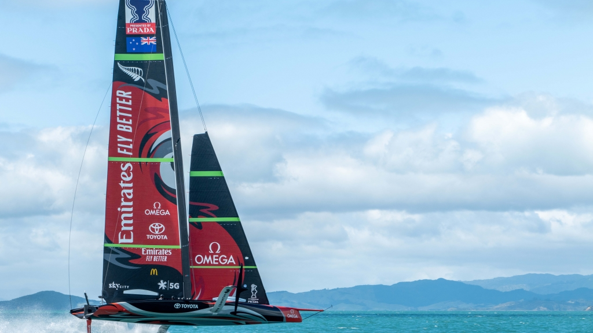
Pushing the limits of innovation
The 36th America's Cup in Auckland, originally scheduled for 2020, finally unfolded in March 2021. The introduction of the AC75, a revolutionary foiling monohull, completely changed the game. Emirates Team New Zealand once again showcased their mastery of the new design, advancing through a competitive field with unmatched precision. The match against Luna Rossa Prada Pirelli was a display of skill, strategy, and resilience, ultimately culminating in a 7-3 victory. The win confirmed that the future of the America's Cup was firmly in the hands of those daring to innovate-Emirates Team New Zealand.
2024
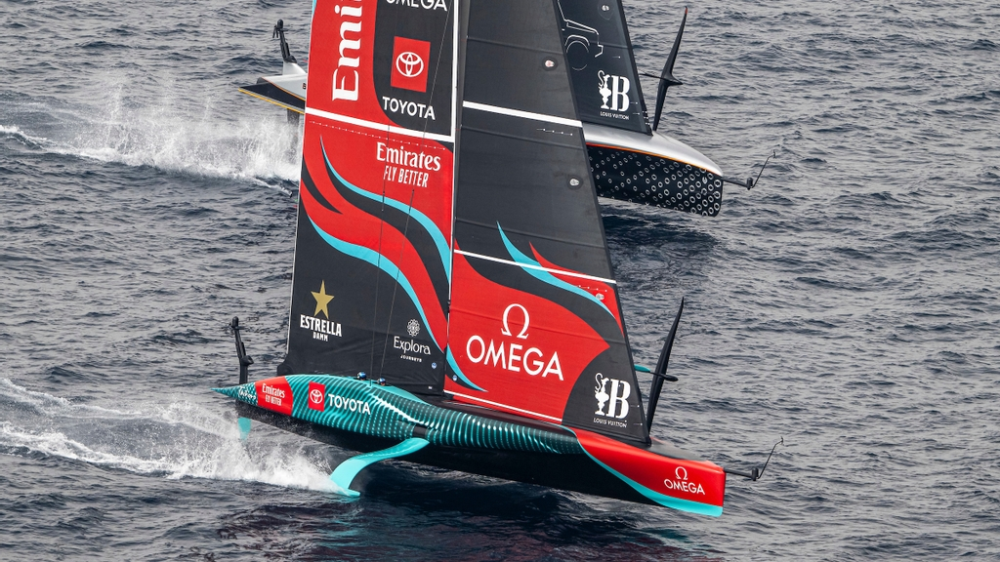
The Barcelona Chapter - Innovation Meets Determination
The Louis Vuitton 37th America's Cup in Barcelona marked another monumental leap in sailing technology and competition. Emirates Team New Zealand returned as the Defender, facing fierce challenges in a regatta set on the Mediterranean's dynamic waters. With cutting-edge AC75s, the Kiwis pushed the boundaries of aerodynamics and control, showcasing a relentless pursuit of innovation. The regatta was a thrilling spectacle, with Emirates Team New Zealand securing victory against the Challenger of Record INEOS Britannia 7-2, solidifying their legacy as the most successful team in recent history, and the first to win the Cup in three consecutive campaigns.